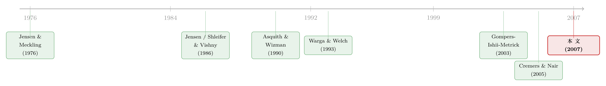

股东说了算，债主就要遭殃吗？——一道被「收购门」掰弯的治理符号
本文读的是 Cremers, Nair & Wei (2007, Review of Financial Studies)：强化股东权力对债主究竟是好是坏，没有统一答案——它取决于公司是否暴露在收购威胁之下。当大股东在场时，仅仅因为「收购脆弱性」不同，公司债的收益率最高可以相差 66 个基点；而真正能把股东与债主重新拉回同一条船的，是债券契约里那几条「事件风险」条款。
1 一个被默认了几十年的等式
打开任何一本公司治理的教科书，你都会读到一句话：好的公司治理，就是让管理层对「资本的供给者」负责。这里的「资本供给者」，在英美语境里几乎被悄悄替换成了一个更窄的词——股东。从 Shleifer and Vishny（1997）那篇著名的综述，到萨班斯-奥克斯利法案，再到一轮又一轮的「赋予股东更多权力」的改革，背后都站着同一个朴素的信念：把股东保护好，公司就治理好了。
可是，公司的资本供给者从来不止股东一种。坐在股东对面的，还有债主。
于是一个几乎从没被认真追问的问题浮上来：那些为股东叫好的治理机制，债主会不会跟着一起买单？
直觉上，答案似乎该是肯定的。股东和债主都希望管理层别乱花钱、别躺平、别把公司开成自己的提款机——在「约束管理层」这件事上，两者利益高度重合。Jensen（1986）那套自由现金流 (free cash flow) 的逻辑就说得很清楚：强势的股东能逼着管理层把闲钱吐出来，少做些毁灭价值的扩张，这对谁都好。（关于这套逻辑四十年后的回响，可参见《现金为什么一定要「还」出去？》。）
但事情没这么简单。
2 张力：股东的「好」，可能正是债主的「坏」
接着，一个自然的问题是：股东和债主，真的永远站在一起吗？
并不是。一旦股东真的握住了方向盘，他们会做一些对自己有利、却专门坑债主的事。
最典型的就是加杠杆。Kim and McConnell（1977）、Ghosh and Jain（2000）这些研究都发现，公司在被收购之后，杠杆率会显著上升。杠杆的极端形式是杠杆收购 (leveraged buyout, LBO)——Warga and Welch（1993）算过一笔账：在 LBO 公告日前后，老债主平均要损失 6%–7% 的财富。债多了，破产概率和破产的无谓损失都上升，更要命的是，新债往往还会重排求偿顺序，把老债主从队伍前头挤到后头去。
还有 Jensen and Meckling（1976）的老问题：资产替代 (asset substitution)。股东天生偏好风险——赌赢了归自己，赌输了债主陪葬。一个被股东牢牢管住、处处替股东着想的管理层，恰恰会把债主的这层担忧放大。（这副「债务这副药不能全吃」的两难，可参见《重读 Jensen 和 Meckling 五十年》。）
所以你看，强股东治理对债主的净效应，理论上是含糊的：约束管理层的那一面是利好，加杠杆、换风险的那一面是利空。到底哪一面占上风，是个纯粹的实证问题。本文作者干脆引了穆迪的一句话来佐证这种含糊——穆迪在 2003 年的方法论里坦承：「对于有控股股东的公司，对债权人究竟意味着什么，我们目前还看不清楚。」
连评级机构都说看不清。那就值得好好看一看。
3 识别策略：把「股东控制」和「收购脆弱性」拆成两把尺子
本文最聪明的一步，是没有把「公司治理」当成一个笼统的好坏标签，而是把它拆成了两个互相作用的机制：一个衡量股东有没有实权，一个衡量公司暴露在收购市场下的程度。
第一把尺子：股东控制 (shareholder control)。 作者用一个哑变量 BLOCK 来代理——只要公司里存在一个持股超过 5% 的机构大股东 (institutional blockholder)，BLOCK=1。为什么只数机构、而不是所有大股东？两个考虑：其一，机构大股东是「外部人」，不会是和管理层穿一条裤子的内部人，正好对应「外部股东监督内部人」的治理含义；其二，持股零碎的机构没有动力去管闲事，用「持股 5% 以上」这个门槛，能把真正有监督激励的大股东筛出来，降噪。Shleifer and Vishny（1986）早就论证过，大股东握有实质性的投票控制权，能在收购中扮演关键角色。
第二把尺子：收购脆弱性 (takeover vulnerability)。 作者用公司章程里的反收购条款来构造一个反收购指数 ATI (anti-takeover index)，数据来自 IRRC。ATI 只盯三条被法学界公认最要命的防御条款：空白支票优先股 (blank check preferred stock)、分级董事会 (classified/staggered board)、以及对召开特别股东大会和书面同意行权的限制。每装一条，就从 4 里减 1 分。于是 ATI 从 1 到 4：ATI=1 防御最严、最难被收购；ATI=4 门户大开、最易被收购。样本里大约 31% 的公司 ATI=1，只有约 5% 的公司 ATI=4。作者也用 Gompers, Ishii and Metrick（2003）那个著名的 24 项 G 指数做了稳健性检验（记作 EXT = 24 − G，两者相关系数高达 66%），结论一致。
这套「两把尺子」的拆法，正是本文与 Cremers and Nair（2005）那篇研究股权价格的姊妹篇一脉相承的地方——在股票那边，他们发现股东控制与反收购防御是互补的治理机制；本文把同一套框架搬到了债券上。
真正关键的一步在于交互项 BLOCK × ATI。作者没有问「大股东好不好」，而是问「在收购威胁不同的公司里，同一个大股东对债主的含义是不是不一样」。这才是全文的题眼。
回归的因变量是公司债的收益率利差 (yield spread)，即债券收益率减去同期限无风险国债收益率。控制变量塞得很满：杠杆、资产回报率 (ROA)、资产规模对数、股票波动率、发行规模对数、到期时间、久期、优先级、是否有担保、是否可赎回，以及信用评级。标准误同时做了 White 异方差和 Newey-West（1 阶）序列相关修正；考虑到同一家公司多只债券之间的相关性（平均 33%，平均每家 4.1 只债券），作者把 t 值除以 √(0.33×4.1)=1.17 做了一个略显粗糙但诚实的下调。控制变量的符号都符合常识——发行越小、业绩越差、波动越高、杠杆越高、可被发行人赎回的债，收益率越高；优先级债的系数是 −0.27，即优先债的利差平均低 27 个基点。
4 数据：八年、1218 只债、299 家公司
本文的数据有三块拼图：
- 公司债：来自雷曼兄弟债券数据库 (Lehman Brothers Bond Database, LBBD)，构造季度收益率利差。作者只用交易商真实报价 (dealer quotes)，不用基于算法外推的矩阵价格 (matrix prices)——后者被公认不如真实报价可靠。LBBD 只到 1997 年 3 月，而股东治理代理变量从 1990 年 9 月才有，这两个日期框定了样本窗口。无风险期限结构取自 Salomon Brothers Yield Book。
- 治理机制：机构持股来自 Thompson Financial（季度），反收购条款来自 IRRC（1990、1993、1995）。
- 债券契约：来自 Fixed Income Securities Database (FISD)，重点抓三类保护债主的条款——杠杆限制、净值要求、以及毒丸卖权 (poison put)。
最终样本是 1990–1997 年间、年均 1218 只公司债、来自 299 家非金融非管制行业的公司，平均每家 4.1 只债。样本里大约 63% 的公司在任一时点都有一个机构大股东。值得一提的相关性：大股东更可能出现在小公司里（BLOCK 与规模相关系数 −28.63%），而小公司本就评级更低（评级与规模相关 56%）——这提醒我们，必须把规模、评级这些都控住，才能把治理的纯效应剥出来。
5 反转：符号会随「收购门」翻转
于是反转出现了。
主回归的结论一句话就能说清：股东控制对债主的影响，符号会随收购脆弱性翻转。
- 当公司暴露在收购威胁下（高
ATI）时，大股东在场（BLOCK=1）与更高的债券收益率相伴——债主在要求风险补偿。 - 当公司被反收购条款牢牢护住（低
ATI）时，大股东在场反而与更低的收益率相伴——这时债主享受到了监督管理层的好处。
把这两端拉开，在有大股东的公司里，仅仅因为收购脆弱性的差异，债券收益率最高可以相差 66 个基点。这不是个小数字。
而且，这种「大股东 + 易被收购 → 信用风险上升」的效应，在小公司里最强——小公司本就最容易成为收购标的，债主的担忧也最真切。这恰恰从侧面印证了机制：债主怕的不是大股东本身，而是大股东叠加收购威胁所指向的那场未来的杠杆重组。
接着作者追问：评级机构看穿这一层了吗？答案是——没看全。债券评级并没有完全吸收 BLOCK 与 ATI 的交互效应，所以评级不足以解释收益率。换句话说，市场在评级之外，自己额外为这种治理风险定了价。
更进一步，作者把视角从「价格」推到了「收益」。他们借用 Gompers et al.（2003）和 Cremers and Nair（2005）在股票上用过的长期投资组合方法，第一次搬到债券上：买入「强股东控制 + 高收购脆弱性」公司的债、卖空「既无强股东控制、也无高收购脆弱性」公司的债，这个组合每年能赚到高达 1.5% 的回报。差异同样在小公司里更大。也就是说，这种治理风险不只写在静态的利差里，还实实在在地兑现成了债券的已实现收益。
6 真正的解药：债券契约
但故事还没完。如果股东与债主的冲突源头是「收购暴露」，那有没有办法直接堵住这个源头？
有。答案藏在债券契约 (bond covenants) 里。
作者的最后一步，是用 FISD 的契约信息去检验：事件风险条款 (event risk covenants) 能不能把股东与债主重新拉回同一条船？ 这里的关键条款有三类——杠杆限制、净值要求，以及毒丸卖权。前两者限制公司能背多少债，后者则赋予债主在控制权变更时按面值（或溢价）把债券回售给发行人的权利。Asquith and Wizman（1990）早就证明，正是这些条款决定了债主在收购中的反应。
结果非常干净：那些被这几条契约保护得好的债券，几乎不受大股东出现的影响。也就是说，一旦契约提前锁死了「收购 → 加杠杆 → 坑债主」这条传导链，强股东治理对债主的负面效应就消失了。
这就引出了全文的核心论断，也是它最漂亮的对仗：
没有债券契约时，股东治理与债主利益是发散的；有了债券契约，两者重新收敛。 股东那一侧的治理机制（控制 + 收购）解决的是股东与管理层的代理问题；而债主这一侧，需要的是属于自己的治理工具——契约。两套治理缺一不可。
我们习惯把「公司治理」当成股东的专利，本文提醒我们：债主也有自己的治理，而且这套治理（契约）恰恰是化解两类资本供给者冲突的关键。这一点，是此前 Bhojraj and Sengupta（2003）、Klock et al.（2005）、Anderson et al.（2004）那几篇研究治理与债主关系的论文都没有触及的。
7 文献脉络
把这条线索捋一捋，会看到一个清晰的演进。
最上游是两块理论基石：Jensen and Meckling（1976）奠定了股东-债主-管理层之间的代理成本框架（资产替代由此而来），Jensen（1986）则给出了自由现金流假说（强股东是约束管理层浪费的好东西）。Shleifer and Vishny（1986）论证了大股东的控制权价值，他们 1997 年的综述则把「公司治理」框定为资本供给者保护自己的方式——但这个综述的视角，基本是股东中心的。
中游是把治理「指数化」的一波工作。Gompers, Ishii and Metrick（2003）用 24 项条款造出了 G 指数，开创了用反收购条款衡量股东权利的范式；Cremers and Nair（2005）紧接着把股东控制（大股东）与收购防御拆成两个互补机制，研究它们对股权价格的交互影响。

与此并行的，是债主一侧的事件研究传统：Warga and Welch（1993）量出了 LBO 中债主的损失，Asquith and Wizman（1990）证明了事件风险条款的作用，Billet, King and Mauer（2004）则系统检验了并购对债主财富的冲击。再到 Bhojraj and Sengupta（2003）、Klock et al.（2005）、Anderson et al.（2004），治理与债主的关系才正式进入研究视野——但它们都默认治理对债主的影响是一致的、不随公司而变的。
本文正坐落在这两条支流的交汇处：它把 Cremers and Nair（2005）的「两机制交互」框架从股票搬到债券，又第一次把契约信息引进来，证明了治理对债主的影响不是均一的——符号随收购脆弱性翻转，而契约能把它抹平。这是它最实在的两点贡献。
8 评论与延伸（Q&A + 研究方向）
（a）几个可能的疑问
Q：用「机构大股东」代理「股东控制」，会不会把因果方向搞反——是大股东带来了收购风险，还是收购风险吸引了大股东？
这是最该警惕的内生性。作者的部分回应靠交互项的结构：他们关心的不是
BLOCK的主效应，而是BLOCK × ATI的符号翻转，而ATI来自章程层面的反收购条款，更新缓慢、相对外生于债券定价。但「大股东选择进入哪类公司」的选择问题依然存在，文中并没有一个真正的外生冲击来切断它，这是识别上最大的软肋。
Q：ATI 只用了 3 条反收购条款，会不会太窄、漏掉了真正重要的防御手段？
作者用 Gompers et al.（2003）的 24 项
EXT指数做了稳健性检验，两者相关系数66%，结论一致。他们的解释是，ATI是更聚焦的「收购脆弱性」代理，而EXT更宽地衡量股东权利。这条三条款的窄指数，反而因为聚焦而更干净。
Q：66 个基点的利差差异，是经济上真重要，还是统计上凑出来的？
在公司债市场，
66bps 是相当可观的——它和优先级带来的27bps、或一个评级档位的差异是同一量级。而且它在已实现收益里也有印证：对应的多空债券组合年化能赚1.5%。两个独立证据指向同一方向，可信度提高。
Q：既然契约能解决冲突，为什么不是所有债券都装满契约？
本文没有展开，但这正是有意思的地方：契约不是免费的，它限制了发行人未来的财务灵活性。哪些公司、在什么时候选择装上事件风险条款，本身是一个内生的资本结构决策。本文把契约当作外生给定的解释变量，没有处理「契约为何存在」这一层，是它留白的地方。
Q：样本停在 1997 年，结论还适用于今天吗？
要谨慎。1990 年代正是机构持股快速上升、收购浪潮退去、毒丸和分级董事会盛行的年代。如今分级董事会大幅减少、毒丸的法律地位变化、被动机构（指数基金）成为最大持股人——「机构大股东 = 积极监督者」这个前提可能已经松动。结论的外推需要重新检验。
Q：股票和债券市场对同一治理冲击的反应，会不会其实是矛盾的？
这正是本文与 Cremers and Nair（2005）合在一起最有意思的对照：同一套「控制 × 收购」机制，在股票那边是利好（提升股价），在债券这边却可能是利空（抬高利差）。两个市场对同一基本面给出方向相反的定价，是否一致、能否套利，是个独立的好问题（可参见《同一家公司，股票和它的「违约保单」，真的在同一条船上吗？》）。
（b）几个可能的研究问题与提案
- 被动持股时代的治理符号是否翻转？
- 【经济故事】本文的机制依赖「机构大股东会积极推动收购」。但 2000 年以后，最大的机构持股人变成了指数基金，它们既不主动发起收购、也很少退出。如果大股东从「积极派」变成「沉默的被动派」，那
BLOCK × ATI的符号是否会减弱甚至消失？这能检验本文机制的边界。 -
【可行性】高。用 13F 区分被动/主动机构持股，沿用本文的利差回归框架，样本可延伸到 2000–2020。数据（FISD、TRACE、IRRC/ISS）都现成，识别靠指数纳入这类准外生冲击。
-
分级董事会的废除作为自然实验。
- 【经济故事】2000 年代以来大量公司在股东压力下取消了分级董事会（
ATI中权重最大的一条）。这相当于一次「收购脆弱性」的外生跳升。若本文机制成立，那些有大股东的公司，债券利差应在废除后上升。这能把本文最大的内生性短板补上。 -
【可行性】中到高。废除事件有明确时点，可做事件研究 + 双重差分；难点在于废除本身可能是内生的（治理变好的公司才废除），需要用代理提案投票结果或交错时点来缓解。
-
外资债主对治理风险的定价是否不同？
- 【经济故事】不同类型的债主对收购/事件风险的敏感度可能不同。外资持有人信息劣势更大、对美国公司章程的理解更弱，可能要么更怕这类风险、要么干脆忽视它。把债主的「身份」拆开看，能揭示治理风险定价的异质性。
-
【可行性】中。需要债券持有人层面的数据（如保险公司的 NAIC 持仓、共同基金 N-PORT），跨境持有人识别较难，但在公司债的机构持仓数据上是 doable 的。
-
契约作为内生选择：谁在用事件风险条款「自我保护」？
- 【经济故事】本文把契约当外生。但更深的问题是：明知有收购风险的公司，是否会主动写入毒丸卖权来压低发行成本？这是一个发行时点的资本结构选择，把「契约的供给」和「契约的效果」一起建模，能讲一个更完整的故事。
- 【可行性】高。FISD 有发行层面的契约信息，可在发行时点做 Heckman 选择模型或工具变量，关键是找到一个影响契约采纳、却不直接影响利差的外生变量（如同期同行业的契约惯例）。
9 我的判断
这篇文章的贡献，不在于发现了「治理影响债主」——那在 2007 年前后已是一个热闹的小领域；它的贡献在于把治理拆开，证明了治理对债主的影响不是一个常数，而是随收购脆弱性变号的函数，并且第一次指出契约是化解这种冲突的关键工具。这个「符号会翻转」的洞见，比任何单一系数都更有生命力——它告诉我们，凡是把「公司治理」当成一个一维好坏标签来回归债主结果的研究，都可能因为忽略交互而得到被稀释、甚至被抵消的估计。
我对识别仍有两点保留。其一，全文是基于报价利差的面板回归，没有一个真正的外生冲击来切断「大股东选择进入哪类公司」的内生性——66 bps 这个数字是相关而非严格因果。其二，契约那一节的处理把契约当作外生给定，但契约本身是发行人的选择，存在明显的自选择。
如果让我接着看，我最想要两样东西：一是一个干净的准自然实验（分级董事会的废除、或某次提高收购难度的州法变更）来锚定因果方向；二是把这套框架推进到 TRACE 时代的成交数据和被动持股结构里，看看在「大股东不再积极」的今天，这条符号翻转的暗线是否依然成立。无论结论是延续还是反转，都会很有意思。
参考文献
- Anderson, R., S. Mansi, and D. Reeb. (2004). Board Characteristics, Accounting Report Integrity, and the Agency Cost of Debt. Journal of Accounting and Economics 37, 315–342.
- Asquith, P., and T. A. Wizman. (1990). Event Risk, Covenants, and Bondholder Returns in Leveraged Buyouts. Journal of Financial Economics 27(1), 195–213.
- Bhojraj, S., and P. Sengupta. (2003). The Effect of Corporate Governance Mechanisms on Bond Ratings and Yields: The Role of Institutional Investors and Outside Directors. Journal of Business 76, 455–475.
- Billet, M. T., T. D. King, and D. C. Mauer. (2004). Bondholder Wealth Effects in Mergers and Acquisitions: New Evidence from the 1980s and 1990s. Journal of Finance 59, 107–135.
- Cremers, K. J. M., and V. B. Nair. (2005). Governance Mechanisms and Equity Prices. Journal of Finance 60, 2859–2894.
- Gompers, P. A., J. L. Ishii, and A. Metrick. (2003). Corporate Governance and Equity Prices. The Quarterly Journal of Economics 118, 107–155.
- Jensen, M. (1986). Agency Costs of Free Cash Flow, Corporate Finance, and Takeovers. American Economic Review 76, 323–329.
- Jensen, M., and W. Meckling. (1976). Theory of the Firm: Managerial Behavior, Agency Costs and Ownership Structure. Journal of Financial Economics 3, 305–360.
- Kim, E. H., and J. J. McConnell. (1977). Corporate Mergers and the Co-Insurance of Corporate Debt. Journal of Finance 32, 349–365.
- Klock, M., W. Maxwell, and S. Mansi. (2005). Does Corporate Governance Matter to Bondholders? Journal of Financial and Quantitative Analysis 40, 693–719.
- Shleifer, A., and R. Vishny. (1986). Large Shareholders and Corporate Control. Journal of Political Economy 94, 461–488.
- Shleifer, A., and R. Vishny. (1997). A Survey of Corporate Governance. Journal of Finance 52, 737–783.
- Warga, A., and I. Welch. (1993). Bondholder Losses in Leveraged Buyouts. Review of Financial Studies 6, 959–982.